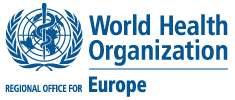

Эффективные меры профилактики и контроля инфекций могут предотвратить одну из трёх внутрибольничных инфекций и снизить частоту использования антибиотиков и развития устойчивости.
Эффективные меры профилактики и контроля инфекций могут предотвратить одну из трёх внутрибольничных инфекций и снизить частоту использования антибиотиков и развития устойчивости

В этом году в ознаменование Всемирной недели правильного использования антибиотиков (World Antibiotic Awareness Week — WAAW) ВОЗ призывает работников здравоохранения предупреждать распространение устойчивости к противомикробным препаратам (УПП) в учреждениях здравоохранения Европы, используя эффективные меры профилактике и контроля инфекций. Статья, опубликованная в журнале Lancet 13 ноября 2017 г., указывает на «реализацию мер профилактики и контроля инфекций как на ключевое решение, препятствующее распространению УПП».
«Устойчивость микроорганизмов к противомикробным препаратам не признаёт границ, и поэтому она всё шире распространяется в Европейском регионе ВОЗ. Эффективные меры профилактики и контроля инфекций являются одним из наших мощнейших видов оружия для борьбы с этой глобальной угрозой здоровью», — говорит д-р Жужанна Якаб (Zsuzsanna Jakab), директор Европейского регионального бюро ВОЗ.
«Хотя мы и начинаем наблюдать некоторый прогресс, нам нужно проявлять бдительность и прилагать всё больше усилий, чтобы снизить уровень устойчивости к антибиотикам. Разумное использование антибиотиков и комплексные стратегии профилактики и контроля инфекций являются фундаментальными для всех секторов, связанных с охраной здоровья», — заявила д-р Андреа Аммон (Andrea Ammon), директор Европейского центра профилактики и контроля заболеваний.
В ряде стран региона более 50% инфекций вызвано патогенными микроорганизмами, устойчивыми к противомикробным лекарственным препаратам. Различия между странами связаны с практиками применения антибиотиков и использования мер профилактики инфекций и инфекционного контроля.
Предотвратить любую инфекцию — значит избежать лечения антибиотиками
Согласно оценкам, до 10% пациентов, получающих лечение в глобальном масштабе, в определённый момент времени приобретают как минимум одну инфекцию, связанную с оказанием медицинской помощи (ИСМП). В Европейском союзе число госпитализированных пациентов, у которых ежегодно развивается ИСМП, составляет, согласно оценкам, 4 миллиона человек, а смерть около 37 тысяч человек непосредственно связана с этими инфекциями.
Используя эффективные меры профилактики и контроля инфекций, можно избежать 1 из 3 ИСМП. Это означает уменьшение потребности в антибиотиках, что, в свою очередь, уменьшает распространение УПП. Международные медико-санитарные правила (ММСП) (2005 г.) являются ориентиром по использованию эффективной профилактики инфекций и инфекционного контроля в качестве ключевой стратегии для борьбы с такой угрозой общественному здравоохранению международного масштаба, как УПП.
Сыграйте свою роль в борьбе с устойчивостью к антибиотикам!
«Работники здравоохранения, организаторы мероприятий по профилактике и инфекционному контролю и руководители больниц играют важнейшую роль в защите людей от инфекций, которые не должны приобретаться в учреждениях здравоохранения», — говорит д-р Недрет Эмироглу (Nedret Emiroglu), директор Отдела инфекционных болезней и безопасности общественного здоровья Европейского регионального бюро ВОЗ. «Соблюдение гигиены рук с помощью мытья рук с мылом или обработки жидкостью на спиртовой основе — это простая, но принципиально важная мера, которая помогает предотвратить развитие инфекции, избежать применения антибиотиков и сохранить их эффективность».
Обязанность работников здравоохранения — следовать рекомендациям ВОЗ «5 моментов гигиены рук»:
- перед контактом с пациентом;
- перед подготовкой и проведением инъекций;
- после контакта с биологическими жидкостями организма;
- после контакта с пациентом;
- посла контакта с предметами, окружающими пациента.
Руководители медицинских учреждений, организаторы мероприятий по профилактике и контролю инфекций и лица, определяющие политику, могут внести свой вклад, поддерживая и отстаивая проведение целевых программ и кампаний по гигиене в соответствии с рекомендациями ВОЗ.
Всемирная неделя правильного использования антибиотиков (WAAW) проходит с 13 по 19 ноября 2017 г. Её основой является предыдущая кампания «СПАСАЙТЕ ЖИЗНИ: соблюдайте чистоту рук», проходившая под лозунгом «Боритесь с устойчивостью к антибиотикам — это в ваших руках».
Новые данные, новые обещания
В Европейском регионе ВОЗ объединены усилия по проведению WAAW и Европейского дня осведомлённости об антибиотиках (европейская инициатива, стартовавшая в 2008 г.). Действия ВОЗ/Европа в отношении WAAW включают публикацию новых данных по УПП для Европейского региона и обращение ко всему сообществу с призывом дать обещание бороться с УПП.
- Новые данные об устойчивости к противомикробным препаратам в странах Европы будут опубликованы 15 ноября 2017 г. в третьем ежегодном докладе по эпиднадзору и в новом разделе Европейского веб-портала ВОЗ по вопросам здравоохранения. Эта информация крайне важна для понимания масштаба проблемы и определения ключевых приоритетов для действий.
- В связи с WAAW 2017, ВОЗ/Европа и служба Общественного здравоохранения Англии (PHE) запускают новую турецкую версию «Хранителей антибиотиков», веб-кампанию, инициированную PHE в 2014 г. (на русском языке материалы кампании стали доступны в прошлом году). Начиная с 2014 г., более 50000 людей обещали оказывать поддержку и стать «хранителями антибиотиков».
Ссылки
- Материалы кампании WAAW
- Глобальный веб-сайт WAAW 2017
- Веб-сайт по УПП Европейского регионального бюро
- Веб-сайт по ПКИ
- Хранители антибиотиков (в Турции)
- Портал European Health Information Gateway
- Центрально-Азиатская и Восточноевропейская сеть эпиднадзора за устойчивостью к противомикробным препаратам (CAESAR)
- Статья в журнале Lancet
- European Antibiotic Awareness Day (EAAD)
Приложения